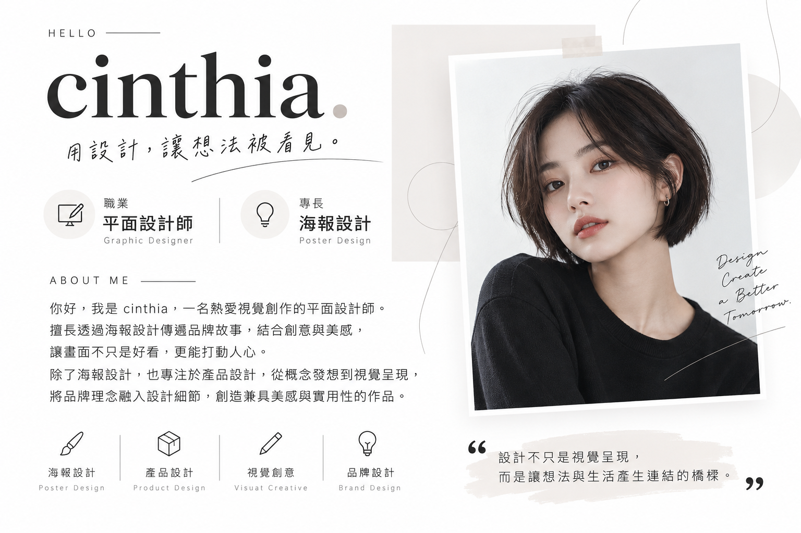

Graphic designer · Visual storyteller
你好，我是
cinthia.
平面設計師 / Graphic Designer
我以海報設計整理品牌故事與活動情緒，也透過產品包裝把美感、功能和使用體驗放在一起思考。
- Poster Design 海報設計
- Product Design 產品設計

Selected visual studies
設計作品.
以下使用專案現有視覺素材作為版面示意。素材是合成展示圖，並非可確認的獨立完稿作品；請以實際作品圖替換後再公開展示。
Education · Practice · Skills
學經歷.
以清楚的脈絡整理學習、實務與專業方向；未提供的名稱保留為待填欄位。
學歷
大學｜學校與科系名稱待補
可補上就讀期間、主修領域與相關學習經歷。
工作經驗
平面設計相關工作｜累積 2 年
參與設計需求整理、視覺發想、版面製作與完稿交付；公司名稱及任職期間待補。
專案參與
海報、包裝與品牌視覺
可依實際經歷補入專案內容、個人負責範圍與成果連結；此處不預設客戶或成績。
Ideas · Everyday · Collaboration
個人特色與聯絡.
My philosophy
保持好奇，讓設計回應真實生活。
我從攝影、閱讀、旅行與日常觀察累積靈感，再把感受整理成清楚、有溫度的視覺語言。
Notes & journal
設計觀察與創作筆記
分享版面觀察、靈感來源與工作方法。文章內容可在日後補上並連結至實際文章頁。
文章連結待補Design services
讓想法成為完整的視覺體驗。
提供海報設計、產品包裝與品牌視覺設計服務，從概念梳理、視覺發展到應用延伸，依需求討論合作方式。
洽詢合作Get in touch
一起聊聊你的設計需求。
以下聯絡資訊為待替換佔位內容，請發布前更新成自己的電子郵件與帳號網址。